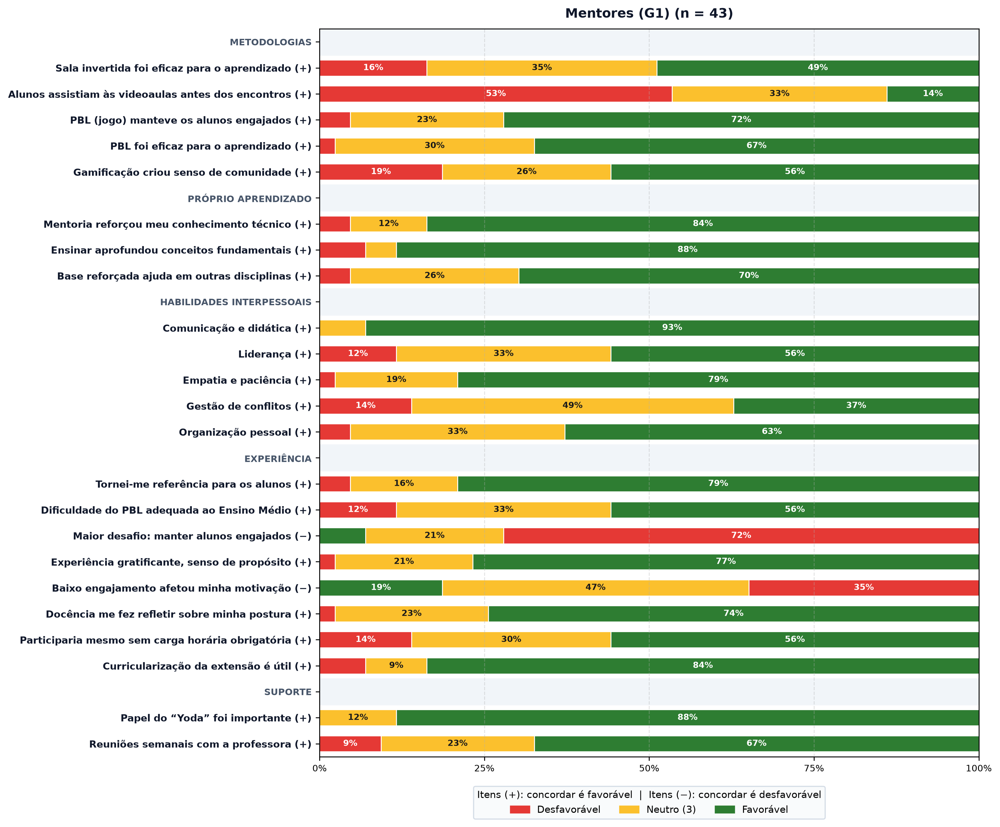
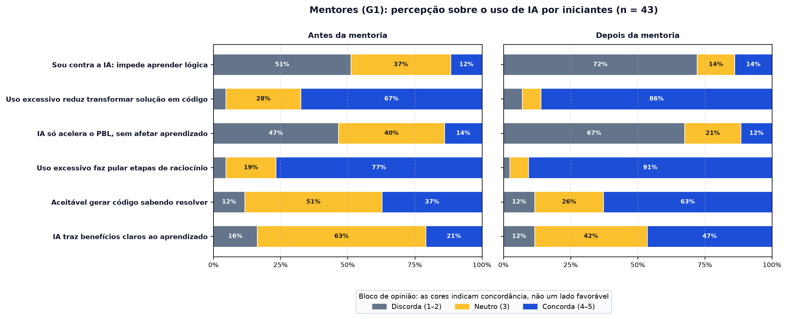

Questionário dos Mentores (G1)
Respostas de 43 mentores da UCE 008, de todas as edições. Verde indica percepção favorável, vermelho desfavorável e amarelo neutro. Itens (+): concordar é favorável; itens (−): o enunciado é negativo e concordar é desfavorável.
Itens Likert por bloco

Contagens por item
| Item | Discorda (1–2) | Neutro (3) | Concorda (4–5) | Média |
|---|---|---|---|---|
| Metodologias | ||||
| Sala invertida foi eficaz para o aprendizado (+) | 7 | 15 | 21 | 3,42 |
| Alunos assistiam às videoaulas antes dos encontros (+) | 23 | 14 | 6 | 2,56 |
| PBL (jogo) manteve os alunos engajados (+) | 2 | 10 | 31 | 3,91 |
| PBL foi eficaz para o aprendizado (+) | 1 | 13 | 29 | 3,81 |
| Gamificação criou senso de comunidade (+) | 8 | 11 | 24 | 3,47 |
| Próprio aprendizado | ||||
| Mentoria reforçou meu conhecimento técnico (+) | 2 | 5 | 36 | 4,14 |
| Ensinar aprofundou conceitos fundamentais (+) | 3 | 2 | 38 | 4,23 |
| Base reforçada ajuda em outras disciplinas (+) | 2 | 11 | 30 | 3,93 |
| Habilidades interpessoais | ||||
| Comunicação e didática (+) | 0 | 3 | 40 | 4,33 |
| Liderança (+) | 5 | 14 | 24 | 3,65 |
| Empatia e paciência (+) | 1 | 8 | 34 | 4,14 |
| Gestão de conflitos (+) | 6 | 21 | 16 | 3,42 |
| Organização pessoal (+) | 2 | 14 | 27 | 3,81 |
| Experiência | ||||
| Tornei-me referência para os alunos (+) | 2 | 7 | 34 | 3,98 |
| Dificuldade do PBL adequada ao Ensino Médio (+) | 5 | 14 | 24 | 3,51 |
| Maior desafio: manter alunos engajados (−) | 3 | 9 | 31 | 3,91 |
| Experiência gratificante, senso de propósito (+) | 1 | 9 | 33 | 4,12 |
| Baixo engajamento afetou minha motivação (−) | 8 | 20 | 15 | 3,28 |
| Docência me fez refletir sobre minha postura (+) | 1 | 10 | 32 | 4,07 |
| Participaria mesmo sem carga horária obrigatória (+) | 6 | 13 | 24 | 3,51 |
| Curricularização da extensão é útil (+) | 3 | 4 | 36 | 4,16 |
| Suporte | ||||
| Papel do “Yoda” foi importante (+) | 0 | 5 | 38 | 4,26 |
| Reuniões semanais com a professora (+) | 4 | 10 | 29 | 3,91 |
Uso de IA por iniciantes: antes e depois da mentoria
Bloco de opinião: azul indica concordância e cinza, discordância, sem lado favorável.

Contagens antes e depois (D = discorda, N = neutro, C = concorda)
| Item | Antes: D / N / C | Depois: D / N / C |
|---|---|---|
| Sou contra a IA: impede aprender lógica | 22 / 16 / 5 | 31 / 6 / 6 |
| Uso excessivo reduz transformar solução em código | 2 / 12 / 29 | 3 / 3 / 37 |
| IA só acelera o PBL, sem afetar aprendizado | 20 / 17 / 6 | 29 / 9 / 5 |
| Uso excessivo faz pular etapas de raciocínio | 2 / 8 / 33 | 1 / 3 / 39 |
| Aceitável gerar código sabendo resolver | 5 / 22 / 16 | 5 / 11 / 27 |
| IA traz benefícios claros ao aprendizado | 7 / 27 / 9 | 5 / 18 / 20 |